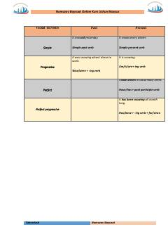

ITIngliz tili zamonlari qoidalari va misollari jamlangan o'quv qo'llanma.
Ushbu qo'llanma ingliz tilidagi zamonlarni (Verb Tenses) o'rganish va takrorlash uchun mo'ljallangan bo'lib, qoidalar, misollar va vaqt so'zlarini o'z ichiga oladi. Kitobda Present Simple va Present Continuous kabi asosiy zamonlarning ishlatilish o'rinlari batafsil tushuntirilgan. Material Boysoat Nomozovning online kurslari uchun maxsus tayyorlangan.